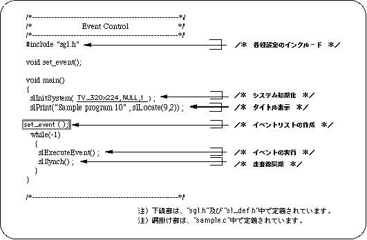
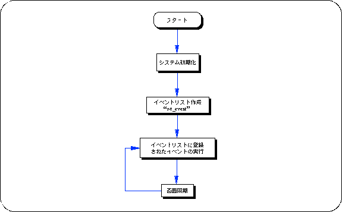
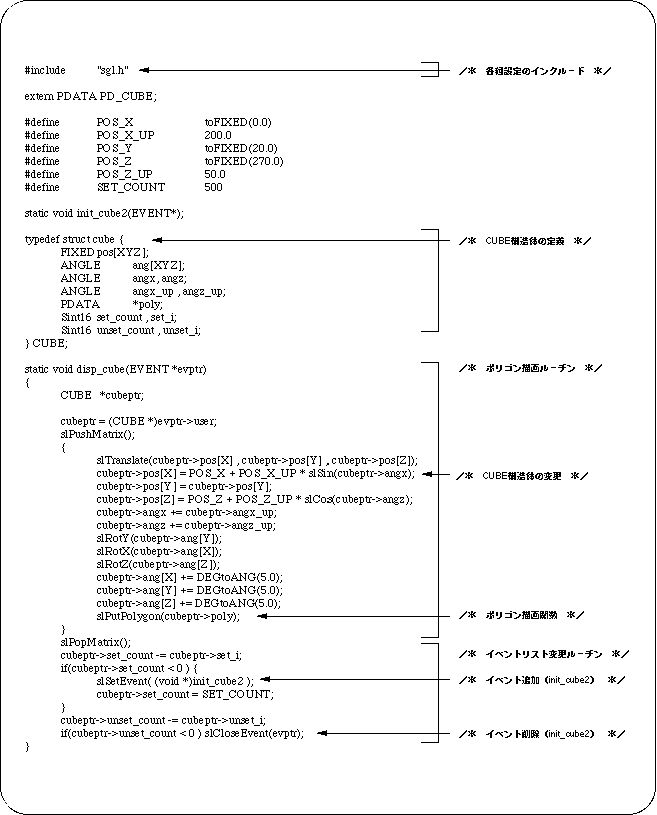
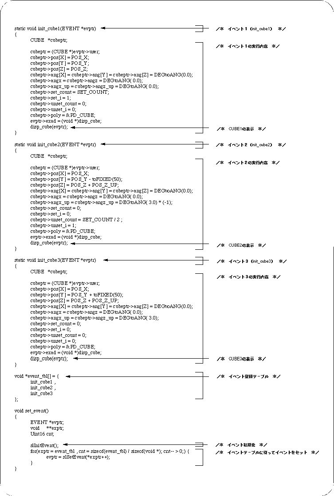
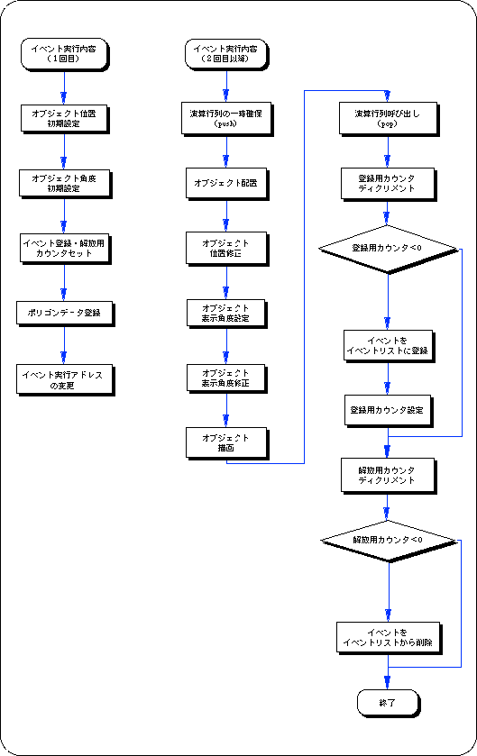
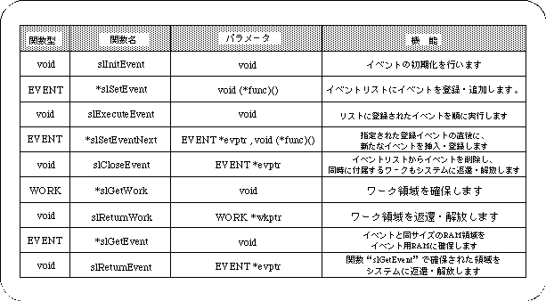

Return to previous page | Return to menu | Go to next page
The sample program “sample_10” (Listing 10-1 and 10-2) is an example of actually performing plumbing using event processing. The program uses events to control and execute the display / non-display of the cube.
The program is roughly divided into two parts: Listing 10-1 “main.c” initializes the system and executes the event, and Listing 10-2 “sample.c” initializes the event and defines and registers the event contents. Is doing.


Listing 10-2 shows the part of “sample10” where event registration and event execution details are defined. In addition, the contents of the event list are changed (added / deleted) in the user-defined function “disp_cube”.


The following flow chart summarizes the event execution.
The event execution contents differ between the first loop and the second and subsequent loops.
In the figure, the left is the first event execution content, and the right is the second and subsequent execution content.

In this chapter, the functions in the following table were explained.
